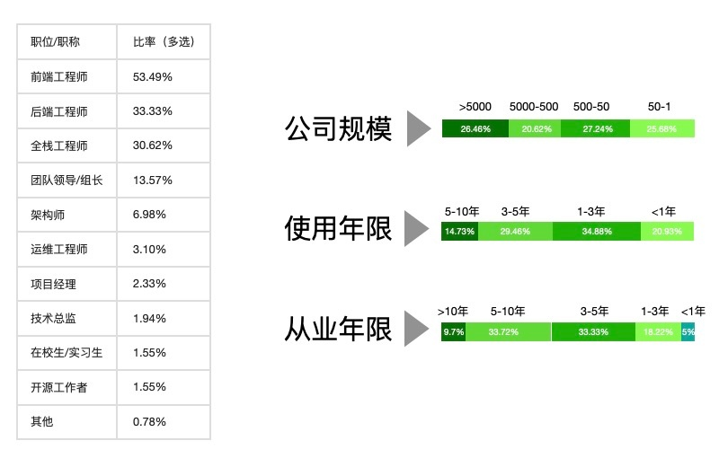

2021 年度报告
受访者
人物来源
本次调查问卷中，填写问卷的 Node.js 开发者主要年龄分布如下：
职业简历
- 典型的受访者来自两种公司，分别是百人左右的中小型公司，以及 5k 人以上的大公司。
- 他们通常是 7 人左右的团队内的前端或者全栈工程师。
- 相比去年，今年的后端工程师比率有较高提升（约 10%）。

工作内容
应用场景
- 开发者使用 Node.js 一般用于 to B 业务。
- 大公司内会有更多的人使用 Node.js 开发内部运行系统 & 自动化工具。
开发场景
- 2021 年整体而言有 81% (6%↓) 的开发者使用 Node.js 开发 Web API，有 41% (10%↓) 的人开发 CLI & 工具。
- 随着使用年限增加将 Node.js 作为服务端 API 的比率逐级下降而开发微服务 (7%↑) 和 CLI & 工具 (4%↑) 的场景逐渐增长。
- 1~3 年经验的开发者更愿意在 SSR 场景中使用 Node.js。
开发流程
代码转译
- 去年 0~1 年的开发者有 45% 不转译，今年大部分开发者都会转译。
- TypeScript 是最常用的转译语言。
代码检查
- 整体上有 88% 的 Node.js 开发者使用 ESLint。
- 8-20 人规模的团队 TSLint 的使用率最高。
配置方式
- 文件配置是最流行的配置方式。
- 虽然配置中心使用概率不高，不过公司规模越大则配置中心的使用概率越高。
编辑器
- VS Code 一骑绝尘，是 Node.js 开发者最喜爱开发工具
进程管理
- K8s & Docker 已经十分流行了。
- 中型公司使用 PM2 的比例更高。
- 规模越小越乐于尝试 Serverless 的部署方式。
部署方式
技术栈
一个典型的 Node.js Web 应用：
- 使用 Express/Koa 框架
- 使用 Mysql/MongoDB + Redis 数据
- 同时配置了 Nginx 作为反向代理
Web 框架
- Koa.js 与 Express.js 并列为最常见的框架。
- 此外较流行的 Web 框架分别有 Egg.js (44% 6%↑)、Nest.js (21% 6%↑)、Midway.js (17% 10%↑) 和 Next.js (7% 0.3↓)。
数据库
- 相比去年的 TOP 3 数据： MySQL (79%)、MongoDB (60%) 和 Redis (49%)，今年的 Redis 反超了 MongoDB，看来大量的 Noder 已经意识到缓存的重要。
- 如果想要使其他替代 MySQL 的关联数据库的话，可以学习 PostgreSQL
反向代理
- Noder 们对于反向代理的概念是约等于 Nginx 的。
- 越大的公司越倾向于使用云中间件。
RPC
- HTTP 是最常见的 RPC 方式，此外使用最多的是消息队列。
- 中型公司使用消息队列的比率最高。
- 大公司使用自研 RPC 协议的比率最高。
开发生态
Node 版本
- 在 2021 年，开发者们普遍使用 14.x 或 12.x。
- 除了 NPM, 最流行的管理工具主要是 yarn 以及 cnpm。
- 约 60% 的开发者在使用 LTS 版本（或以上）的 Node.js。
依赖管理
- 老司机更喜欢 cnpm, 年轻人中 yarn 更流行。
- 随着开发经验的增加，开发者会更多的试图寻找 NPM 以外的依赖管理工具。
NPM 镜像
- 接近 80% 的开发者会通过公司部署私有镜像或自行配置来加速 npm 依赖下载
- 公司规模越大自行部署私有镜像的概率越高
学习提升
学习途径
- 老司机更多的从开源代码 (Github & NPM) 来学习 Node.js。
- 新同学相比之下会更多的通过学习视频以及博客 & 期刊等渠道学习。
- 相比去年，网上的资料变多了通过购买书籍来学习 Node.js 的下降了 13.5%。
使用困惑
- 今年使用困惑的 Top 3 分别是性能优化 (57% 0.6%↓)、内存泄漏 (43% 1%↑) 以及 node_modules 依赖（25% 3%↑）。
- 新人更容易面临的困惑 Top 3 分别是: 异步编程、事件驱动以及 Debug。
- 随着开发经验的增加，内存泄漏的比例也逐步上升。
资源需求
- 文档是大家最期待的资源。
- 新同学对视频教程和免费在线课程的呼声最高。
- 随着开发经验的增加，更加关注大会活动以及沙龙。
未来关键字
- 从业经验越高则越关注 WebAssembly (WASI) 和 N-API。
- 越年轻的同学越关注 Serverless。
生态期望
- 相比去年，今年的 Noder 开始更多的关系维护成本 & 生态繁荣（更多人参与）。
- 不满 1 年的开发者更关心学习成本，年限越长越关心维护成本。
最后
同样的数据在不同的人眼里可以衍生出不同的看法，本报告内的解读仅供参考。